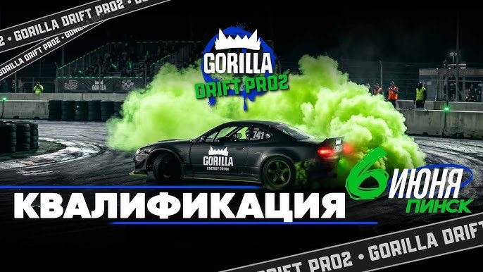
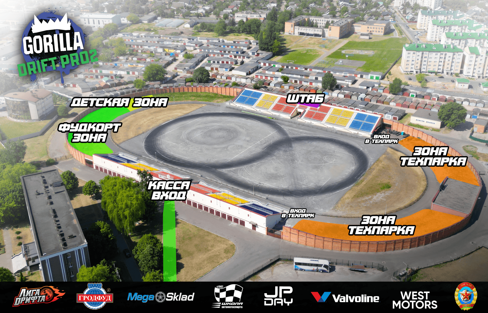

01
1 этап · PRO2 · TOP32
ЗавершеноЛогойск
Дрифт · PRO2
Официальная платформа чемпионатов

Серия PRO2 для пилотов, которые борются в сетке TOP32 и набирают очки на этапах сезона 2026.
Gorilla Drift PRO2 2026 объединяет этапы в Логойске, Пинске, Стайках и Бресте. Формат чемпионата построен вокруг квалификационных заездов и парных дуэлей в сетке TOP32.
На странице собраны календарь этапов, расписание ближайшего уикенда, конфигурация трассы в Пинске и личный зачет пилотов.
Дрифт · PRO2
Дрифт · PRO2
Дрифт · PRO2
Дрифт · PRO2
Дисциплина: дрифт · тип PRO2 · сетка TOP32

После 1 этапа сезона 2026
| Место | № | ФИО | Автомобиль | 1 этап 19 апреля · Логойск | 2 этап 7 июня · Пинск | 3 этап 21 июня · Стайки | 4 этап 5 сентября · Брест | Итог |
|---|---|---|---|---|---|---|---|---|
| 1 | 72 | Чёлушкин Андрей | Toyota Mark II JZX 81 | 227 | — | — | — | 227 |
| 2 | 68 | Мякишев Юрий | Toyota Altezza | 204 | — | — | — | 204 |
| 3 | 555 | Чуматиди Евгений | Mercedes C500 AMG | 185 | — | — | — | 185 |
| 4 | 88 | Кузнецов Григорий | Nissan Laurel c33 | 144 | — | — | — | 144 |
| 5 | 35 | Пак Михаил | Nissan 350z | 122 | — | — | — | 122 |
| 6 | 888 | Завьялов Владимир | Toyota Altezza | 122 | — | — | — | 122 |
| 7 | 13 | Дмитриев Алексей | BMW E36 | 119 | — | — | — | 119 |
| 8 | 7 | Богданов Антон | Nissan 200sx | 114 | — | — | — | 114 |
| 9 | 38 | Овсянников Сергей | Toyota GT86 | 101 | — | — | — | 101 |
| 10 | 22 | Сембаев Ильнур | Toyota Mark II | 86 | — | — | — | 86 |
| 11 | 333 | Агеев Максим | BMW E36 | 86 | — | — | — | 86 |
| 12 | 47 | Любман Илья | BMW E30 | 84 | — | — | — | 84 |
| 13 | 79 | Молочков Александр | BMW E36 | 84 | — | — | — | 84 |
| 14 | 61 | Титов Михаил | BMW 328 | 82 | — | — | — | 82 |
| 15 | 97 | Тедеев Георгий | BMW E36 | 82 | — | — | — | 82 |
| 16 | 2 | Смагулов Руслан | BMW 325 | 82 | — | — | — | 82 |
| 17 | 33 | Титов Александр | BMW 328i | 46 | — | — | — | 46 |
| 18 | 43 | Марченко Никита | Subaru Impreza WRX STI | 44 | — | — | — | 44 |
| 19 | 771 | Гончаренко Дмитрий | Toyota Altezza | 44 | — | — | — | 44 |
| 20 | 30 | Глушков Денис | Toyota Altezza | 42 | — | — | — | 42 |
| 21 | 54 | Жердев Артем | Toyota Mark II | 42 | — | — | — | 42 |
| 22 | 78 | Виксне Павел | Nissan 370z | 42 | — | — | — | 42 |
| 23 | 81 | Саковнин Александр | BMW E36 | 42 | — | — | — | 42 |
| 24 | 8 | Головина Лина | BMW E46 | 42 | — | — | — | 42 |
| 25 | 29 | Васильев Андрей | BMW E30 | 41 | — | — | — | 41 |
| 26 | 51 | Сапижак Юрий | Nissan Fairlady Z | 41 | — | — | — | 41 |
| 27 | 60 | Алпысов Дамир | BMW E46 | 41 | — | — | — | 41 |
| 28 | 96 | Олейников Дмитрий | Toyota Corolla AE S86 | 41 | — | — | — | 41 |
| 29 | 99 | Косенко Дмитрий | Toyota Cresta | 41 | — | — | — | 41 |
| 30 | 109 | Микляев Николай | BMW E36 | 41 | — | — | — | 41 |
| 31 | 24 | Тологонов Саламат | BMW E36 | 0 | — | — | — | 0 |
| 32 | 64 | Канат Темерхан | BMW E36 | 0 | — | — | — | 0 |
| 33 | 169 | Булганбаев Муратбек | BMW E36 coupe | 0 | — | — | — | 0 |